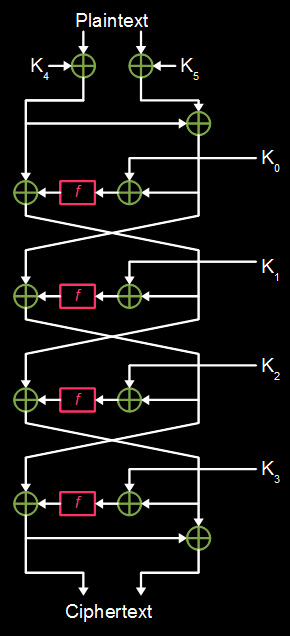
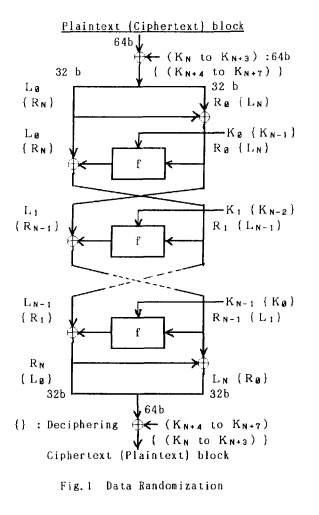

Feal & it's variants
Introduction
Feal est un algorithme de chiffrement présenté dans la fin des année 80 par Akihiro Shimizu et Shoji Miyaguchi. C’est un chiffrement par bloc qui à concurrencé le DES et qui est aujourd’hui obsolète.
Feal (Fast Data Encipherment Algorithm) est un chiffrement de type réseau de Feistel. Il a connu plusieurs variations que nous allons voir ici.
Par la suite , des illustrations seront issue du blog de Jon King
Fonctionnement global.
Le fonctionnement générale du chiffrement et de découper un texte clair en block de 64 bits.
Par la suite , nous allons étudier le chiffrement d’un seul bloc
Nous allons découper nôtre bloc de 64 bytes en 2 bloc de 32 bytes.
Chacun de ces bloc va subir une succéssion de permutation , de xor et être passé dans une fonction $f$ , appelé la fonction de Feistel.
Présentation de la fonction de Feistel

Cette fonction prend en entrée 4 bytes , elle y applique 2 xor entre les bytes du milieu avant de passer dans une $2^{nd}$ fonction notée G.
La fonction G effectue un Rot-2 sur la somme des 2 entrées qu’on lui fournit. En plus de cela , on peut y ajouter un entier $x \in {0,1}$ , on notera respectivement $G_0$ et $G_1$ en fonction de la valeure de x .
-
$\forall x \in {0,1}~;~G_x(a,b) = [(a+b + x) \pmod{256}] « 2$
-
$\begin{cases} y_1 = G_1(x_0⊕x_1,x_2⊕x_3) \newline y_2 = G_0(y_1,x_2⊕x_3) \newline y_0 = G_0(x_0,y_1) \newline y_3 = G_1(x_3,y_2) \end{cases}$
En python , on a :
def F(α):
f1 = α[0]^α[1]
f2 = α[2]^α[3]
f1 = S1(f1,f2)
f2 = S0(f2,f1)
f0 = S0(α[0],f1)
f3 = S1(f2,α[3])
return [f0,f1,f2,f3]
def S1(X1,X2):
return S0(X1,X2,k=1)
def S0(X1,X2,k=0):
def rot2(T,bit_block=8):
return (T << 2)|(T >> (bit_block - 2))
return rot2((X1 + X2 + k) % 256) % 256
Un effet notable de cette fonction est qu’elle n’est pas réversible , il n’est pas possible de retrouver l’entrée de cette fonction à partir d’un résultat.
Génération des subkeys.
Le chiffrement fonctionne avec une structure de réseau de Feistel.
Ce qui veut dire que la clé d’origine doit être dérivé pour en obtenir une plus grande , ainsi , cette nouvelle clé permettra de chiffrer un message tout au long du processus de chiffrement.
Feal a plusieurs variantes mais dans celle d’origine: Feal-4 , la clé devait être de 64 bits (8 caractères).
La dérivation de clé est décrite ici : The FEAL Cipher Family
Voici mon implémentation en python:
def key_generation(key):
subkeys = [0] * (4//2+4)
Kl,Kr = key[:8],[0]*8
Kr1,Kr2 = Kr[:4],Kr[4:]
Qr = xor(Kr1,Kr2)
A0,B0 = Kl[:4],Kl[4:]
D0 = [0]*4
for i in range(4//2+4):
if(i % 3 == 1):
xored = xor(B0,Kr1)
elif(i % 3 == 0):
xored = xor(B0,Qr)
else:
xored = xor(B0,Kr2)
xored = xor(xored, D0) if i > 0 else xored
D0 = A0[0:4]
b = A0
A0 = Fk(A0, xored)
subkeys[4 * i: 4 * i + 2] = A0[0:2]
subkeys[4 * i + 2: 4 * i + 4] = A0[2:4]
A0, B0 = B0, A0
return subkeys
Par la suite , chaque sous-clé sera composée de 4 bytes et sera notée $K_i$ , pour un système Feal-4 , la dérivation de clé donnera 6 sous-clés.
On aura donc : $(K_1,K_2,K_3,K_4,K_5,K_6)$.
Structure de Feal-4
Jon King nous présente un shema explicatif sur le fonctionnement du chiffrement:

Explication :
La Plaintext est séparé en 2 parties : $R$ et $L$ , respectivement la droite et la gauche: $(L0,R0)=P$
-
Un premier Xor est appliqué aux 2 parties avec les 2 dernières subkeys. :
$(L_0, R_0 ) = (L0, R0 ) ⊕ (K_N, K_{N+1}, K_{N+2}, K_{N+3} )$ -
Un $2^{nd}$ Xor est appliqué entre $R$ et $L$ qui est stocké dans $R$:
$(L_0, R_0 )= (L_0, R_0 ) ⊕ ( \phi , L_0 )$ -
Les 4 tours de Feal sont appliqués:
- $R$ est Xor avec une subkey $K_i$
- Le résultat est passé dans la fonction
f - Un Xor est appliqué entre $R$ et $L$ puis est stocké dans $L$
- $R$ et $L$ s’interchangent (R devient L et inversement.)
$\begin{cases} R_r = L_{r-1} ⊕ f (R{r-1}, K{r-1}) \newline L_r = R{r-1} \newline \end{cases}$
-
Un dernier Xor est appliqué entre $R$ et $L$ qui est stocké dans $R$:
$(R_N , L_N)= (R_N , L_N) ⊕ ( φ , R_N)$ -
Les 2 parties $R$ et $L$ sont concaténées pour former le bloc chiffré: $C = (R_N, L_N)$ En python , on a :
L,R = split(bloc)
L = xor(L,subkey[-2*4:-4])
R = xor(R,subkey[-4:])
R = xor(L,R)
for i in range(N):
L = xor(L,F(xor(R,subkey[i*4:(i+1)*4])))
L,R = R,L
L,R = R,L
R = xor(R,L)
result = L+R
Déchiffrement
Le déchiffrement d’un bloc conciste simplement à remonter le shéma en partant du bas :
bloc = data[k*8:(k+1)*8]
L,R = split(bloc)
R = xor(L,R)
L,R = R,L
for i in reversed(range(N)):
L,R = R,L
L = xor(L,F(xor(subkey[i*4:(i+1)*4],R)))
R = xor(R,L)
R = xor(R,subkey[-4:])
L = xor(L,subkey[-2*4:-4])
result += L+R
Variantions et application à N Tours.
On a ici présenté un modèle à 4 tours. Celui-ci peut être généralisé à N tours.
La structure de Feal-N dépend du nombre de sous-clés générés lors de la dérivation de clé au début du chiffrement. Pour feal-4 , nous avions 6 subkeys :
- Les 4 premières étaient réservées au tours dans le réseau de Feistel.
- Les 2 dernières étaient utilisées pour un xor au début.
Dans une application à N rounds , on présente plusieurs modifications:

-
Le xor de début/fin de chiffrement n’est plus .
-
Le xor précédent la fonction $f$ n’est plus appliqué.
-
La fonction de Feistel est modifié , elle prend maintenant 2 Paramètres , le bloc de droite ainsi que la Subkey $K_i$
- $\begin{cases} fk_1 = G_1(α_1⊕α_0,( α_2⊕α_3⊕β_0)) \newline fk_2 = G_0( α_2⊕α_3,(fk_1⊕β_1)) \newline fk_0 = G_0(α_0,(fk_1⊕β_2)) \newline fk_3 = G_1(α_3,(fk_2⊕β_3)) \newline \end{cases}$
def Fk(α, β): fk1 = α[1]^α[0] fk2 = α[2]^α[3] fk1 = S1(fk1,(fk2^β[0])) fk2 = S0(fk2,(fk1^β[1])) fk0 = S0(α[0],(fk1^β[2])) fk3 = S1(α[3],(fk2^β[3])) return [fk0,fk1,fk2,fk3]
Dernière version : Feal-NX
Une dernière version de Feal à était présentée: Feal-NX . Celle ci est trés similaire à Feal-N mais la clé d’origine est de 16 bytes et non plus de 8 bytes:
def key_generation(self,key,rounds):
subkeys = [0] * (rounds//2+4)
Kl,Kr = key[:8],key[8:]
Kr1,Kr2 = Kr[:4],Kr[4:]
Qr = xor(Kr1,Kr2)
A0,B0 = Kl[:4],Kl[4:]
D0 = [0]*4
for i in range(rounds//2+4):
if(i % 3 == 1):
xored = xor(B0,Kr1)
elif(i % 3 == 0):
xored = xor(B0,Qr)
else:
xored = xor(B0,Kr2)Z
xored = xor(xored, D0) if i > 0 else xored
D0 = A0[0:4]
b = A0
A0 = Fk(A0, xored)
subkeys[4 * i: 4 * i + 2] = A0[0:2]
subkeys[4 * i + 2: 4 * i + 4] = A0[2:4]
A0, B0 = B0, A0
return subkeys
Conclusion :
Feal est un chiffrement qui permet de comprendre le système de Feistel mais il reste dépassé et inutilisable aujourd’hui .
J’ai écris l’implémentation en python de :
- Feal-4
- Feal-N
- Feal-NX